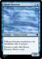
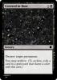
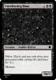

-
Acrobatic Maneuver*
Instant
Exile target creature you control, then return that card to the battlefield under its owner’s control.
Draw a card.
1/57
-
Bird of Prey
 Creature — Bird
Flying
Creature — Bird
Flying
, Sacrifice another permanent you control: Bird of Prey gets +1/+1 and gains vigilance until end of turn.
3/3
2/57
-
Commandant’s Blessing
Sorcery
You gain 5 life.
“There was a time when the purpose of the Library was to teach and protect. I would like to see that time return.”
3/57
-
Court Recordkeeper
Creature — Human
At the beginning of your upkeep, you may archive. (To archive, exile a card in a graveyard that shares a color with this card.)
Whenever you exile a card from a graveyard, you gain 2 life.
1/5
4/57
-
Disenchant*
Instant
Destroy target artifact or enchantment.
5/57
-
Forlorn Blessing
Instant
Delve (Each card you exile from your graveyard while casting this spell pays for .)
Target creature gets +1/+1 until end of turn. Whenever it deals combat damage this turn, you gain that much life.
6/57
-
Gaol Warden
Creature — Human Soldier
Intensify — Whenever a card or permanent enters a graveyard this turn, Gaol Warden gains vigilance until end of turn.
,  : Tap target creature.
3/3
7/57
: Tap target creature.
3/3
7/57
-
Gradual Fading
Enchantment — Aura
Enchant nonland permanent
Enchanted permanent can’t activate its activated abilities and is colorless.
: Exile enchanted permanent.
8/57
-
House Guard
Creature — Human Soldier
Vigilance
2/1
9/57
-
Iridescent Wisp
Creature — Spirit
Vivid (Iridescent Wisp is all colors among other permanents and spells you control in addition to its other colors.)
As long as Iridescent Wisp is three or more colors, it has flying.
1/1
10/57
-
Keeper of the Gate
Creature — Human Wizard
Prowess (Whenever you cast a noncreature spell, this creature gets +1/+1 until end of turn.)
Whenever you cast a noncreature spell, another target creature gets vigilance.
2/4
11/57
-
Librarian’s Harness
Enchantment — Aura
Enchant creature
At the beginning of each upkeep, you may archive. (To archive, exile a card in a graveyard that shares a color with this card.)
Enchanted creature has flying.
Those that explore the Library need restraining harnesses as to traverse its endless shelves.
12/57
-
Mortal Angel
 Creature — Angel
Creature — Angel
Delve (Each card you exile from your graveyard while casting this spell pays for .)
Flying
If Mortal Angel would be exiled from anywhere, instead put it into its owner’s graveyard.
“We made these guardians in our image. And, as such, they are imperfect as well.”
4/2
13/57
-
Plated Warhorse
Creature — Horse
Plated Warhorse can’t attack alone.
“It is important that the commandant sits above his troops so that he may instill in them courage.”
2/3
14/57
-
Rallied Reinforcements
Creature — Human Soldier
Intensify — Whenever a card or permanent enters a graveyard this turn, you may cast Rallied Reinforcements as if it had flash. (You may cast this spell any time you could cast an instant.)
When Rallied Reinforcements enters the battlefield, create a 1/1 white Soldier creature token.
1/1
15/57
-
Recruitment Order
Enchantment
When Recruitment Order enters or leaves the battlefield, create two 1/1 white Soldier creature tokens.
, Exile Recruitment Order: Scry 2.
16/57
-
Rezea Librarian
Creature — Human
When Rezea Librarian enters or leaves the battlefield, you may archive. (To archive, exile a card in a graveyard that shares a color with this card.)
1/2
17/57
-
Smiting Blow
Instant
Vivid (Smiting Blow is all colors among other permanents and spells you control in addition to its other colors.)
Destroy target attacking or blocking creature with power 3 or less. If Smiting Blow is three or more colors, instead destroy that creature.
18/57
-
Squadron Hawk*
Creature — Bird
Flying
When Squadron Hawk* enters the battlefield, you may search your library for up to three cards named Squadron Hawk*, reveal them, and put them into your hand. Shuffle your library.
1/1
19/57
-
Anesthetic Aether
 Sorcery
Tap up to two target creatures.
Sorcery
Tap up to two target creatures.
Improve — If there are three or more colors among cards in exile, tapped creatures you don’t control don’t untap during their controller’s next untap step.
20/57
-
Battle-Scared
Instant
Target creature has base power and toughness 0/2 until end of turn and is a Coward in addition to its other types.
21/57
-
Chromatic Pulse
Instant
Target spell or permanent is all colors until end of turn.
Draw a card.
22/57
-
Court Apprentice
Creature — Human Wizard
Flash (You may cast this spell any time you could cast an instant.)
Prowess (Whenever you cast a noncreature spell, this creature gets +1/+1 until end of turn.)
Students of the Library must attend to the court at a moment’s notice.
1/4
23/57
-
Desperate Search
Instant
Draw two cards.
Exile Desperate Search from your hand: Scry 2. (To scry 2, look at the top two cards of your library, then put any number of them on the bottom of your library and the rest on top in any order.)
24/57
-
Disguised Refugee
Creature — Human Coward
Vivid (Disguised Refugee is all colors among other permanents and spells you control in addition to its other colors.)
If Disguised Refugee is three or more colors, it has hexproof.
House Lexal accepts all refugees from other Houses and offer safety.
3/2
25/57
-
Forced Retreat
Instant
Choose one —
• Return target creature to its owner’s hand.
• Return target planeswalker to its owner’s hand.
House Lexal may not win when they engage in combat with House Ceran. But they also do not lose.
26/57
-

House Deserter
Creature — Human Coward
If House Deserter would leave the battlefield, exile it instead.
Discard a card, exile House Deserter: Draw a card.
2/1
27/57
-
Infiltration Report
Sorcery
You may archive. (To archive, exile a card in a graveyard that shares a color with this card.)
Target creature you control can’t be blocked until end of turn. If you archived this turn, you may look at target player’s hand.
28/57
-
Library Elder
Creature — Human Wizard
When Library Elder enters the battlefield, you may archive. (To archive, exile a card in a graveyard that shares a color with this card.)
Whenever you archive, you may pay . If you do, scry 1.
0/4
29/57
-
Mizzium Skin
Enchantment — Aura
Flash (You may cast this spell any time you could cast an instant.)
Enchant nonland permanent
Enchanted permanent has can’t be the target of spells or abilities and doesn’t untap on its controller’s untap step.
30/57
-
Nautilus Sentry
 Creature — Crab
Defender
Creature — Crab
Defender
Improve — If there are three or more colors among cards in exile, Nautilus Sentry may attack as if it did not have defender.
5/5
31/57
-
Negate*
Instant
Counter target noncreature spell.
32/57
-
Orssus Tinkerer
Creature — Human Wizard
Whenever you cast a noncreature spell, you may untap a tapped nonland permanent you control.
3/2
33/57
-
Skyborn Aspirant
Creature — Human Wizard
Whenever you cast a noncreature spell, target creature gains flying until end of turn.
2/2
34/57
-
Tunnel Snake
Creature — Serpent Horror
Delve (Each card you exile from your graveyard while casting this spell pays for .)
Tunnel Snake can’t attack unless there are ten or more cards in exile.
To get to the underground catacomb of House Nusia, one must pass through where the tunnel snakes rule.
4/5
35/57
-
Undulate
Instant
Delve (Each card you exile from your graveyard while casting this spell pays for .)
Counter target spell.
36/57
-
Vibrant Epiphany
Sorcery
Vivid (Vibrant Epiphany is all colors among other permanents and spells you control in addition to its other colors.)
Draw three cards, then discard two cards unless Vibrant Epiphany is three or more colors.
37/57
-
Wind Drake*
Creature — Drake
Flying
2/2
38/57
-
Bare Fangs
 Enchantment — Aura
Enchant creature
Enchantment — Aura
Enchant creature
When Bare Fangs enters the battlefield, draw a card.
Enchanted creature gets +1/+1 and has menace.
39/57
-
Blood Price
Sorcery
Delve (Each card you exile from your graveyard while casting this spell pays for .)
Target player draws X and loses X life, where X is the number of cards in exile named Blood Price plus one.
40/57
-

Covered in Dust
Sorcery
Destroy target permanent.
You may archive. (To archive, exile a card in a graveyard that shares a color with this card.)
41/57
-
Crippling Blight*
Enchantment — Aura
Enchant creature.
Enchanted creature gets -1/-1 and can’t block.
42/57
-
 Cryptwatch
Creature — Human Cleric
Cryptwatch enters the battlefield tapped.
Cryptwatch
Creature — Human Cleric
Cryptwatch enters the battlefield tapped.
Cryptwatch doesn’t untap on its controller’s untap step.
, Put the top card of your library into your graveyard: Untap Cryptwatch. Activate this ability only as a sorcery.
Someone needs to make sure that the dead stay in their grave.
4/4
43/57
-
Fading Remnant
Creature — Spirit
Lifelink
Whenever Fading Remnant becomes blocks or is blocked, exile it.
3/1
44/57
-
Festering Kobold
Creature — Zombie Kobold
Whenever Festering Kobold leaves the battlefield, target creature gets -1/-1 until end the turn.
1/1
45/57
-
Frenzied Bloodseeker
Creature — Bat
Flying
Exile a card from your hand: Frenzied Bloodseeker gains your choice of haste or lifelink until end of turn.
2/1
46/57
-
Orsuss Dissenter
Creature — Human Rogue
Orsuss Dissenter can’t block.
Improve — If there are three or more colors among cards in exile, Orsuss Dissenter can’t be blocked.
3/3
47/57
-
Plagued Orphan
Creature — Human
Whenever Plagued Orphan becomes targeted by a spell or ability, sacrifice Plagued Orphan.
As long as Plagued Orphan is tapped, it is indestructible.
1/1
48/57
-
Questionable Potion
Sorcery
Each opponent loses 1 life for each colored card in exile. If Questionable Potion is three or more colors, you gain 1 life for each colored card in exile.
49/57
-
Rough Mercenary
Creature — Human Rogue
Deathtouch
Intensify — Whenever a card or permanent enters a graveyard this turn, you may have Rough Mercenary gain first strike until end of turn.
1/1
50/57
-
Shambling Ghoul*
Creature — Zombie
Shambling Ghoul* enters the battlefield tapped.
2/3
51/57
-
 Shared Essence
Instant
Target permanent gets lifelink until end of turn.
Shared Essence
Instant
Target permanent gets lifelink until end of turn.
Draw a card.
52/57
-
Tapestry Wraith
Creature — Spirit
Whenever Tapestry Wraith or another creature you control leaves the battlefield, you may archive. If you do, target player loses 1 life. (To archive, exile a card in a graveyard that shares a color with this card.)
2/2
53/57
-
Touch of Despair
Instant
Target creature gets -3/-3 until end of turn.
Improve — If there are three or more colors among cards in exile, that creature gets -5/-5 instead. If that creature would die this turn, exile it instead.
54/57
-

Unrelenting Mass
 Creature — Zombie Horror
Delve (Each card you exile from your graveyard while casting this spell pays for .)
Creature — Zombie Horror
Delve (Each card you exile from your graveyard while casting this spell pays for .)
Menace
56/3
55/57
-
 Upturned Graves
Sorcery
Intensify — Whenever a card or permanent enters a graveyard this turn, you may cast Upturned Graves as if it had flash. (You may cast this spell any time you could cast an instant.)
Upturned Graves
Sorcery
Intensify — Whenever a card or permanent enters a graveyard this turn, you may cast Upturned Graves as if it had flash. (You may cast this spell any time you could cast an instant.)
Shuffle target creature card in exile or in a graveyard into its owner’s library.
56/57
-
Vanishing Visions
Sorcery
Target player discards his or her hand unless he or she discards two cards that shares a color with a card in exile.
57/57
{kind=link}
{kind=link}
{kind=link}
{kind=link}
{kind=link}
{kind=link}
{kind=link}
{kind=link}
{kind=link}
{kind=link}
{kind=link}
{kind=link}
{kind=link}
{kind=link}
{kind=link}
{kind=link}
{kind=link}
{kind=link}
{kind=link}
{kind=link}
{kind=link}
{kind=link}
{kind=link}
{kind=link}
{kind=link}
{kind=link}
{kind=link}
{kind=link}
{kind=link}
{kind=link}
{kind=link}
{kind=link}
{kind=link}
{kind=link}
{kind=link}
{kind=link}
{kind=link}
{kind=link}
{kind=link}
{kind=link}
{kind=link}
{kind=link}
 Cryptwatch
Cryptwatch{kind=link}
{kind=link}
{kind=link}
{kind=link}
{kind=link}
{kind=link}
{kind=link}
{kind=link}
 Shared Essence
Shared Essence{kind=link}
{kind=link}
{kind=link}
 Upturned Graves
Upturned Graves{kind=link}